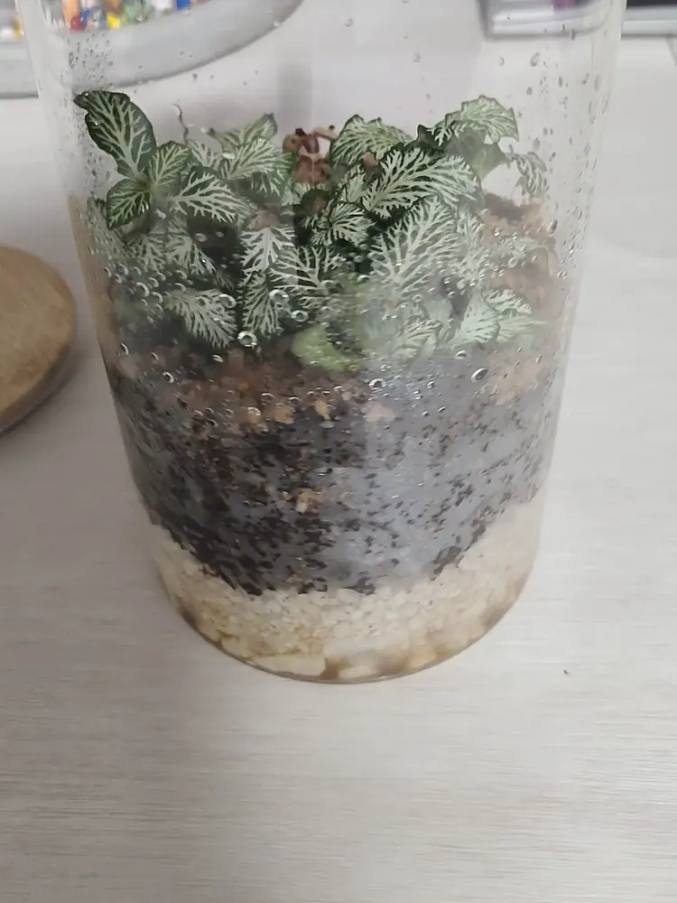
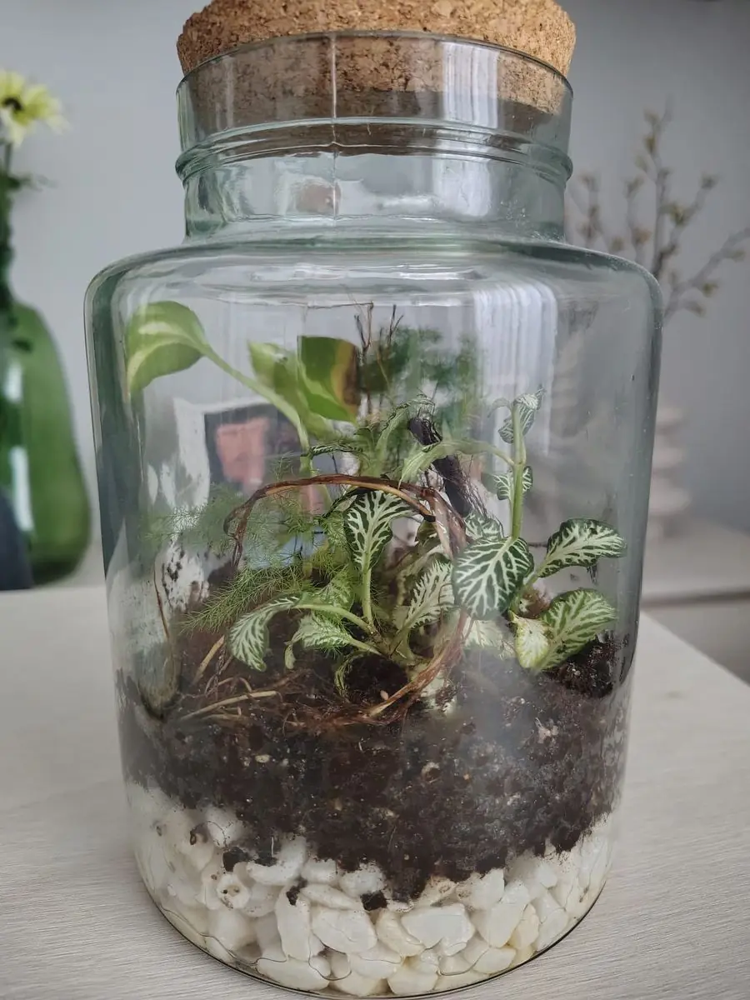

Un mini terrario navideño es un tarro de cristal pequeño con musgo, una planta de interior y algún detalle de Navidad dentro. Es un regalo vivo, barato y fácil de hacer en una tarde. En esta guía tienes los materiales, el montaje paso a paso, qué decoración usar (y cuál evitar para que no salga moho) y cómo entregarlo para que llegue bien.

Un tarro pequeño con fittonia y grava blanca en el fondo: la base perfecta para darle un toque de nieve.
1. Qué necesitas
- Un tarro de cristal con tapa de entre 0,5 y 2 litros. Para regalar, mejor uno con boca ancha (unos 7-8 cm): es más fácil de montar y de limpiar. Un tarro de cocina con tapa de corcho o de madera queda muy navideño.
- Grava blanca o arcilla expandida para el drenaje. La grava blanca (marmolina) hace de «nieve» en el fondo.
- Sustrato ligero, con perlita o fibra de coco. Tienes la receta en Cómo hacer el sustrato.
- Musgo para cubrir la tierra.
- Una sola planta pequeña, como una fittonia de hoja roja o blanca.
- Uno o dos adornos que aguanten la humedad (más abajo verás cuáles).
- Herramientas: una cucharilla, unas pinzas largas o un palillo chino y un pulverizador.
2. Elige una planta con colores de Navidad
La fittonia es la reina de los terrarios pequeños: le gusta la humedad, crece despacio y tiene variedades con nervios rojos o rosas y otras con nervios blancos. Rojo y verde, o blanco y verde, ya son colores navideños sin añadir nada más. Tienes sus cuidados en Fittonia: cuidados y riego.
Otras opciones que aguantan un tarro cerrado son los helechos pequeños y el musgo solo. Lo que no conviene meter son abetos, pinos o ramas de árbol de Navidad: son plantas de exterior, necesitan frío y aire, y dentro de un tarro húmedo se secan o se pudren. Tampoco suculentas ni cactus, que se pudren con la humedad del cerrado. Más ideas en Qué plantas poner en un terrario.

Una fittonia de tonos rojizos ya aporta el color navideño por sí sola.
3. Paso a paso: montaje del mini terrario
- Limpia el tarro con agua caliente y sécalo bien por dentro. Sin restos de jabón.
- Drenaje: 2 cm de grava blanca o arcilla expandida en el fondo.
- Sustrato: entre 3 y 5 cm, según el tamaño del tarro. En un tarro pequeño, la tierra y el drenaje no deberían pasar de un tercio de la altura, para que la planta tenga sitio.
- Planta: haz un hueco con la cucharilla, quita parte de la tierra vieja del cepellón con cuidado y colócala. Si la fittonia es grande, puedes dividirla y usar solo un trozo (lo explico en Cómo dividir una fittonia).
- Musgo alrededor de la planta, presionando un poco para que toque la tierra.
- Adornos: coloca uno o dos con las pinzas, apoyados sobre el musgo o sobre una piedra.
- Primer riego: unas pocas pulverizaciones, hasta que la tierra esté húmeda pero sin agua en el fondo.
- Limpia el cristal por dentro con un papel enrollado en las pinzas y cierra la tapa.
4. Decoración: qué usar y qué evitar
Dentro de un tarro cerrado hay mucha humedad durante semanas, así que la decoración tiene que aguantarla sin pudrirse ni oxidarse.
- Sí: figuritas de cerámica, de vidrio o de plástico duro (un muñeco de nieve, un reno, una casita), piedras blancas o una piña pequeña fuera del tarro, atada a la tapa.
- Sí: grava blanca o arena blanca como «nieve», en una zona pequeña junto a la planta.
- No: nieve artificial en polvo o en espray, purpurina y espumillón. Se pegan al cristal, se mezclan con la tierra y no se pueden sacar.
- No: piñas, ramas, canela o frutos secos dentro del tarro. Son materia orgánica que con la humedad puede llenarse de moho (mira Moho en el terrario).
- No: adornos de metal pintado, que se oxidan y manchan, ni de cartón o papel.
5. Hazlo con tiempo antes de regalarlo
Lo ideal es montarlo al menos dos semanas antes de regalarlo. Así ves si se empaña demasiado, si la planta se adapta y si sale algo de moho en los adornos, y puedes corregirlo a tiempo. Si el cristal amanece empañado del todo y no se aclara durante el día, destapa unas horas: lo explico en Terrario empañado.
Durante esos días, colócalo con luz indirecta, nunca al sol directo ni encima de un radiador: el cristal hace efecto invernadero y la planta se puede cocer.
6. Cómo entregarlo para que llegue bien
- Transporte: en una caja con papel o tela alrededor para que no se mueva, y siempre en vertical.
- Frío: en diciembre, no lo dejes en el coche por la noche ni en un rellano helado. La fittonia sufre por debajo de unos 13 °C.
- Tarjeta de cuidados: «Luz sin sol directo, tapa cerrada, regar solo si no hay gotas en el cristal durante varios días». Con eso basta.
Tienes más detalles sobre cajas, frío y tarjetas en Regalar un terrario por Navidad.

Un tarro con tapa de corcho: con una cinta en el cuello ya está listo para regalar.
Preguntas rápidas
¿Cuánto cuesta hacer un mini terrario navideño? Con un tarro de cocina, una fittonia pequeña y algo de grava y sustrato, el coste suele ser bajo. Tienes un desglose en Cuánto cuesta hacer un terrario.
¿Puedo poner un abeto pequeño dentro? No es buena idea: los abetos y pinos son plantas de exterior y no aguantan un tarro cerrado y húmedo.
¿Se puede dejar abierto? Sí, pero entonces se seca antes y hay que regarlo más a menudo. Mira Cómo cuidar un terrario abierto.
¿Cuándo hay que regarlo? Casi nunca. Solo si durante varios días no aparecen gotas en el cristal y la tierra se ve clara y seca.
¿Pueden hacerlo los niños? Sí, con ayuda de un adulto con el cristal y las herramientas. Es una manualidad sencilla para una tarde de diciembre.
Son consejos generales. Cada casa tiene su luz y su temperatura, así que observa el terrario durante las primeras semanas y ajusta el riego según lo que veas.
Te puede interesar: Regalar un terrario por Navidad · Terrario en botella o en tarro · Cómo elegir el recipiente · Fittonia: cuidados y riego

¿Prefieres que te lo monte yo?
Hago terrarios cerrados por encargo en la Comunidad de Madrid, desde 25 €.
Ver cómo pedir el tuyo →